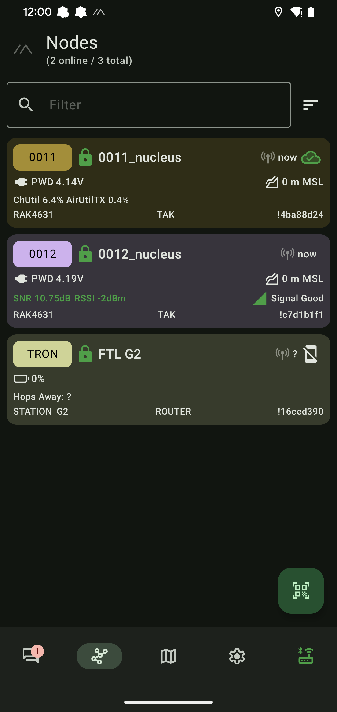
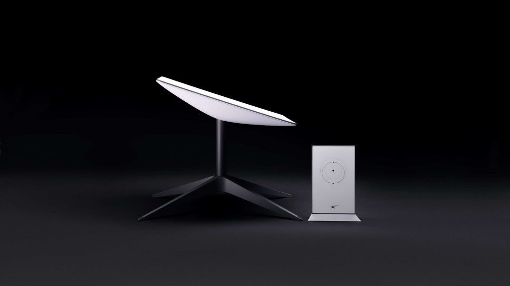
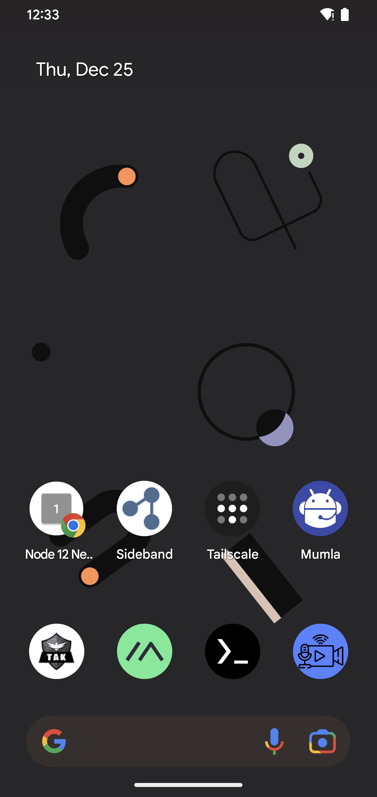

Mesh Communications
Voice calls, text messaging, GPS sharing, and internet distribution — all running on the mesh with no cell towers, no ISP, and no cloud services. The Nucleus provides multiple communication paths that work completely off-grid.

Jami — Encrypted Voice and Video Calls
Every Nucleus node runs an OpenDHT server instance. Jami uses this for peer discovery and call routing — encrypted voice and video calls between any devices on the mesh with no phone company, no SIP server, and no cloud accounts.
OpenDHT runs with network isolation on every node — your DHT is invisible to the public internet. Peer discovery is entirely within your network. No external observer can see who's calling whom. Works fully offline — verified.
Jami also works across Tailscale tunnels between remote nodes. Add the remote tunnel IPs to the OpenDHT bootstrap config and calls route over whichever path is available — local mesh or internet tunnel.
- Encrypted voice and video calls — no phone company, no SIP server
- OpenDHT on every node for peer discovery within the mesh
- Network-isolated — your DHT is not visible on the public internet
- Works fully offline on just the mesh
- Also works across Tailscale tunnels for remote nodes
- No cloud accounts, no call logs, no metadata collection
Meshtastic — Long-Range Text and GPS
The Nucleus includes a built-in Meshtastic LoRa radio (RAK4631) that provides AES-256 encrypted text messaging and GPS sharing over radio. Multi-mile range through terrain that blocks WiFi — no cell towers, no ISP, no infrastructure of any kind.
When the LoRa radio is in BLE mode (toggled via the web UI), you use the standard Meshtastic phone app over Bluetooth to send and receive messages. Each node in the Meshtastic mesh extends range for every other node — messages hop through intermediate nodes automatically.
The Nucleus web dashboard also provides a built-in Meshtastic messaging interface — no phone app required if you don't want one.
- AES-256 encrypted text and GPS over LoRa radio
- Multi-mile range — tested 8+ miles with line of sight
- Works through terrain that blocks WiFi
- BLE mode for standard Meshtastic phone app
- Web UI messaging — no phone app required
- No cell towers, no carrier records, no metadata trail

Internet Gateway Distribution
Plug any Nucleus node into an internet source — Starlink, Ethernet, cellular modem — and the entire mesh network gets internet access. Every node and every device connected to those nodes can reach the internet with no additional routers or configuration.
The gateway node handles NAT and routing automatically. One internet connection serves the entire distributed mesh. Combine with Tailscale for secure tunnel back to your infrastructure, or Reticulum transport for decentralized encrypted routing over the internet link.
- One internet source serves the entire mesh network
- Plug Ethernet from Starlink, cellular modem, or any source into any node
- Internet automatically shared to all connected nodes and devices
- NAT and routing handled automatically
- Combine with Tailscale or Reticulum for secure internet-bridged comms

Large Events and Outdoor Activities
At festivals, races, group hikes, or any large outdoor gathering, cell towers get overloaded or don't exist. The Nucleus Meshtastic radio gives your group encrypted text and GPS sharing over miles of range — no cell signal required.
For groups that need more than text, the WiFi mesh adds high-speed data for voice calls via Jami, photo sharing, and real-time coordination between teams spread across a large area. Each node extends coverage for the entire group.
- Meshtastic text and GPS with 8+ mile range (line of sight)
- WiFi mesh for voice, pictures, and fast data when closer together
- Works completely independent of cell networks
- Each node extends coverage for the entire group
- Battery powered and portable — carry in a pack


All Services at a Glance
The Nucleus runs all of these communication services simultaneously. Jami for voice and video, Meshtastic for long-range text, the WiFi mesh for high-speed IP data, and internet gateway when a connection is available. They all coexist on the same hardware, running in parallel.
Switch between Meshtastic CoT Bridge mode (for ATAK SA forwarding) and BLE mode (for Meshtastic phone app) via the web dashboard. The WiFi mesh and all IP-based services run regardless of which LoRa mode is active.
- All services run simultaneously on the same node
- LoRa mode switchable via web UI — CoT Bridge or BLE
- WiFi mesh and IP services always active regardless of LoRa mode
- Web dashboard for monitoring and configuration from any connected device

Ready to Build Your Network?
Get started with Nucleus mesh nodes. Contact us for pricing and availability.